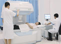
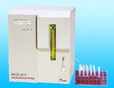
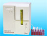
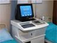
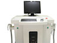
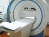

良好的医疗关系是高质量诊疗的基础，医生应及时了解并满足患者在诊疗上的需求，通过沟通使彼此理解，相互信任，共同参与并完成整个诊疗活动。
医生是以解除病人疾苦为职业的，应怀着对生命的尊重，对病人的痛苦感同身受，善待每一位病人，用医生的"爱心、耐心和细心"构建病人的放心。
医院应公开透明医疗价格，因病施治，因病施检、因病施药，拒绝"红包"、抵制"回扣"，让患者明明白白看病，从细微处做起真正维护患者的利益。
权威媒体眼中的南宁中山泌尿医院
南宁中山医院，坐落于南宁市安吉路28号，是一所集临床、教学、科研、预防、保健、康复为一体的现代化专业男科医院。医院设施先进、专科齐全、技术力量雄厚、服务热情周到，是“全国百姓……【详细】
-
国务院津贴专家
何长民 名誉院长从事泌尿外科工作四十余年，历任上海市长征医院分院院长顾问、泌尿外科主任、博士研究生导师、华南地区唯一国务院特殊津贴获得者，国家“２１１工程”重点建设学科、博士授权学科创始人之一…
院长寄语：
我院历经建设和发展，现已成为一所集医疗、保健、科研为一体，以诊治男科常见病、多发病和疑难病症为重点的国内知名的现代化专科医院……【详细】
 王卓 副主任医师
王卓 副主任医师- 
-
格赛特前列腺道介入技术结合了微波、短波、射频等优势的一种综合介入疗法，具有超微创，不反复，费用低等优势。
针对性治疗：各类前列腺疾病
-
阴茎背神经阻断术由中美泌尿专家联合开发，手术时间短，安全无副作用，近98%受术患者术后延时5-30分钟
针对性治疗：原发性、顽固性早泄
-
该技术被称为新一代包皮手术的金标准，临床统计表明，它微创无痛，自然美观，不损伤性功能无需重复治疗
针对性治疗：包皮过长、包茎
-
该技术根据患者具体情况，对症定制、物理治疗、药物调理、血流调节、心理疏通、康复调理于一体的系统科学疗法。
针对性治疗 阳痿、勃起困难、不射精等
-
针对男性不育的不同原因，采用中西医结合的方法，不开刀不手术、专项检测、标本兼治，让男人称"爸"在起跑线上。
针对性治疗：男性不育
-
针对“生殖感染反复发作，不容易痊愈”的特点，从基因分子生物学角度，破坏病毒的基因生物链，达到彻底治愈的目的。具有检测快、疗效快、恢复快优势。
针对性治疗：各类生殖感染疾病
-
运用特效中西药，在局部造成高浓度药离子，能够快速杀灭病毒，清除病毒产生的毒物在最短的时间内从患者体内排出，同时使机体产生免疫抗体，彻底根治梅毒杜绝复发。
针对性治疗：梅毒
-
促进炎症迅速消散，将药力快速带到病灶处，使抗体产生一系列的生物学效应，对隐藏在深层的细菌、病毒有效杀灭；改善微循环，加速新陈代谢；再配合短波、微波物理治疗，针对性强，直接有效。
针对性治疗：尿道炎
-
南宁中山医院（泌尿）自建院来紧跟国内外男科发展动态，先后投巨资引进大批国内外顶尖男科设备，集男科检查、辅助诊断、各种男科疾病治疗于一体。医院拥有现代化的层流手术室、腔内场效微创治疗仪、微米红光治疗仪等先进治疗设备仪器，为我院的临床诊疗提供了良好的技术平台，同时也使医院的男科诊断、治疗项目更加完善。
MVIS-2015型全自动血液流变分析系统
采用独特的“双球直管式测量主体”专利技术，采用计算机进行自动控制，实现了血液流变特性曲线的一次测量，系统操作简单、方便、检测结果符合国际 ……[更多介绍]
- 
- 
- 
- 

非常点评：做强优势学科，重点突围，逐步培植起在当地乃至全国都叫得响的医疗技术品牌。这是南宁中山医院(医院）在专科特色道路上一直主张的理念。为此，不仅在技术和专家水平上有所体现，更是积极吸收先进西医文化技术成果，并适用于男科疾病诊疗领域，为专业检测、科学诊疗打下坚实基础。而专业的诊疗仪器的引进，更是让南宁中山医院（泌尿）脱离出拘囿的医疗范畴，成就新兴的现代化专科健康诊疗中心。


-
南宁中山男子医院在服务上也以患者为中心，以优质的医疗服务于大众。适时推出：网上在线咨询、免挂号绿色通道以及男性24小时综合门诊部，免除了排队挂号的烦恼，并保护了患者的隐私。
患者至上：将患者利益放在首位，充分尊重患者的人格与尊严、尊重患者的个人隐私权与知情同意权。充分体现对患者的尊重、理解和关怀。
绿色医疗：为患者就诊提供最大方便，实行“无假日门诊”，建立以病人为中心的科学布局和便捷就医的合理流程，实现全程导医服务的绿色通道， 全力营造舒适、温馨的绿色医疗花园， 建立诚 信、理解、和谐的医疗环境。
人文服务：视患者为亲人，营造高品位的人文关怀，从患者舒心、方便、安全、满意的服务出发，倡导“一患、一医、一护”的绿色护理，创建“无烟输液室”，开设 24 小时专家咨询热线，定期健康回访等。
价格公示无欺诈，杜绝不明收费
为打造放心诊疗医院，特执行了四项项举措：首先，所有的收费项目严格执行物价局核准价，并上榜公示，接受社会监督；其次，所有医护人员执业许可证全部注册，持证上岗，保障患者权益，再次，遵守廉政规定，不接受红包。
- 前列腺液常规10.00/次
- 血常规18.00/次
- 尿常规10.00/次
- RPR定性试验50.00/次
- 单纯疱疹病毒抗体100.00/次
- 淋球菌培养及鉴定100.00/次